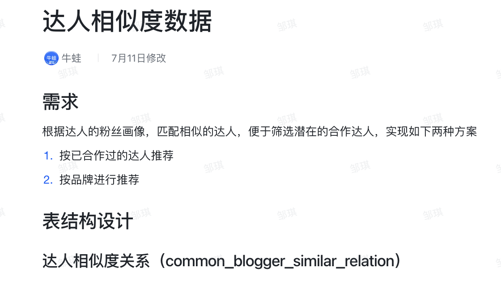

123请问
达人相似度数据
需求
根据达人的粉丝画像，匹配相似的达人，便于筛选潜在的合作达人，实现如下两种方案
- 按已合作过的达人推荐
- 按品牌进行推荐
表结构设计
达人相似度关系（common_blogger_similar_relation）
| 字段 | 类型 | 字段说明 | 是否允许为空 | 备注 | 约束 |
|---|---|---|---|---|---|
| id | varchar(64) | ID | 不允许 | ID | 主键 |
| blogger_uid | varchar(64) | 已合作达人 UID | 不允许 | 已合作达人 UID | 联合唯一键 |
| similar_blogger_uid | varchar(64) | 相似达人 UID | 不允许 | 相似达人 UID | |
| similar_value | decimal(10,2) | 他们之间的相似度 | 不允许 | 他们之间的相似度 | |
| create_date | datetime | 创建时间 | 允许 | 创建时间 |
接口设计
- 根据已合作的达人 UID 列表，获取相似度 TOP N 个的相似达人 UID
接口：getSimilarBloggerTop
参数：
- 已合作达人 UID 列表
- TOP N
返回值:
- 相似达人 UID 列表
)
本博客所有文章除特别声明外，均采用 CC BY-NC-SA 4.0 许可协议。转载请注明来自 牛蛙JUN！